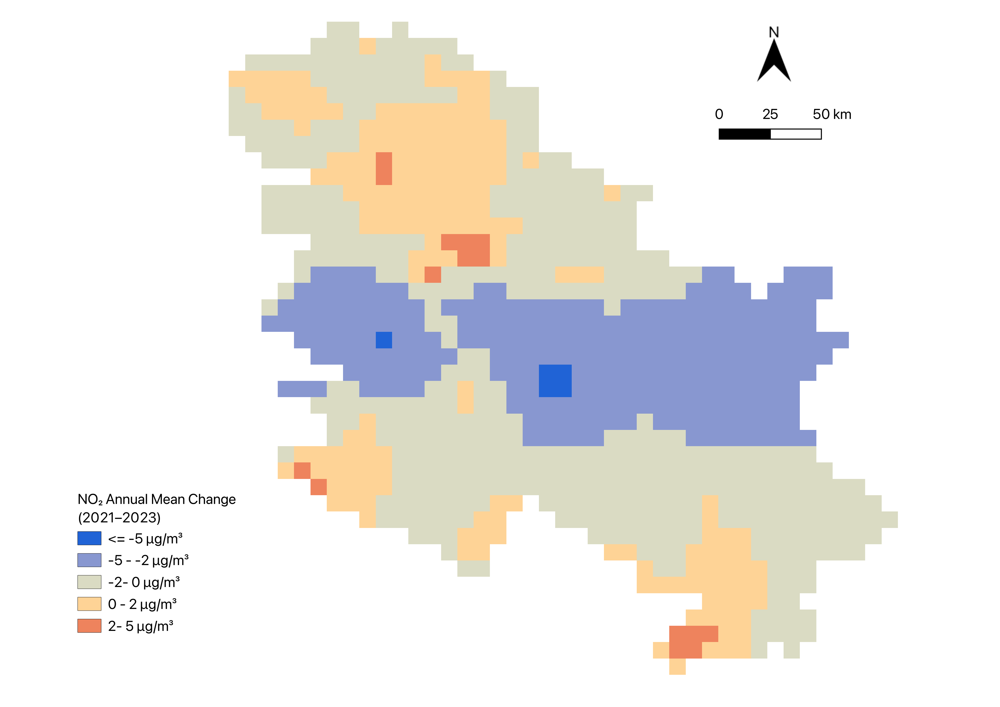
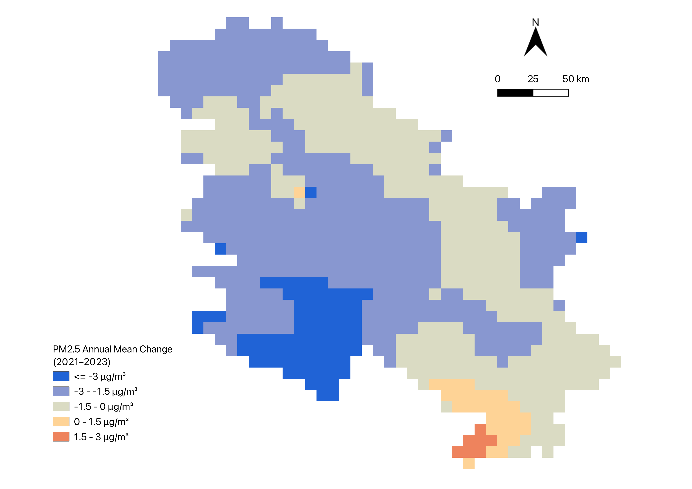
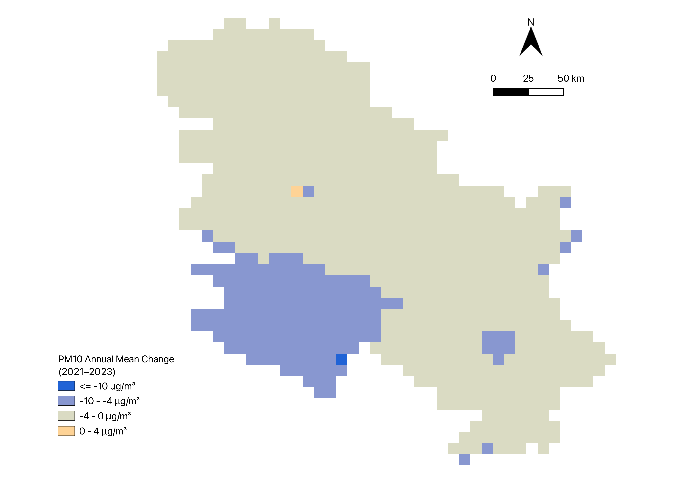
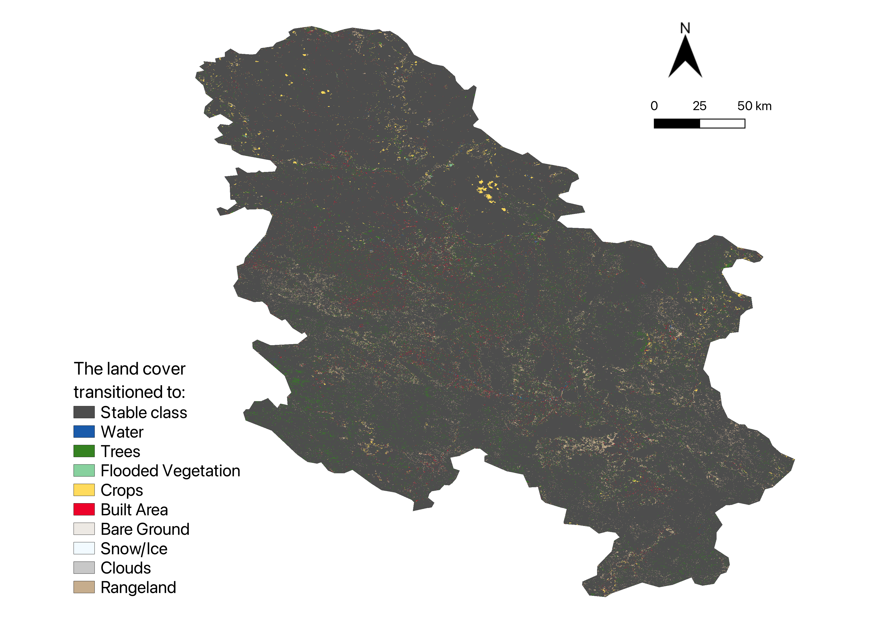
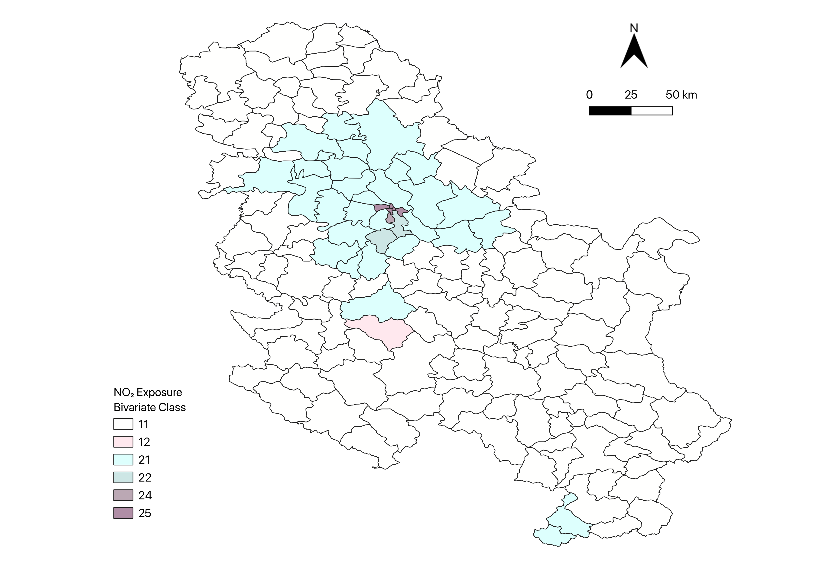
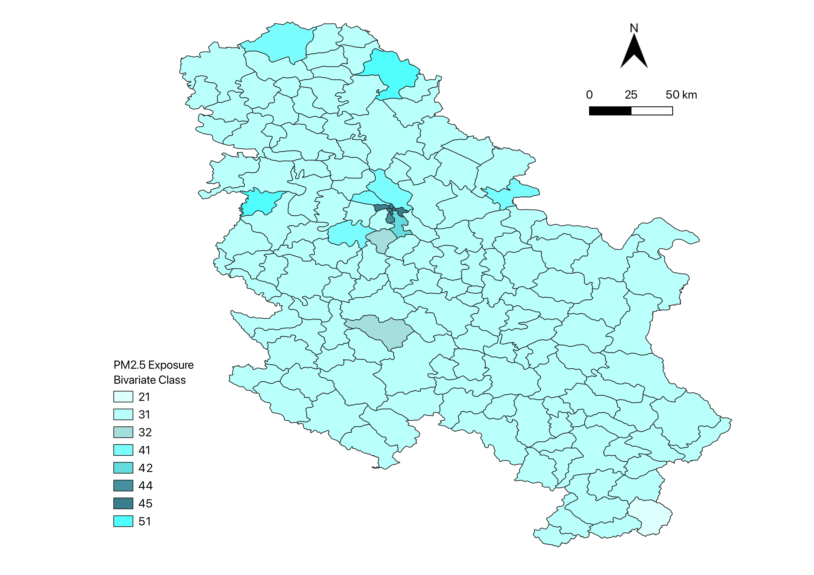
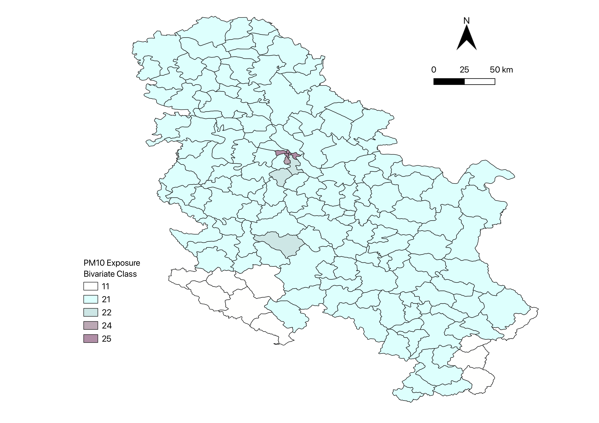

NO₂ AMAC 2021–2023
Annual mean aggregation change map for nitrogen dioxide.
Maps, tables and interpretation of the Serbia air quality analysis.
The Annual Mean Aggregation Change maps show whether pollutant concentrations increased or decreased between 2021 and 2023. These maps are key outputs for interpreting air quality trends in Serbia.

Annual mean aggregation change map for nitrogen dioxide.

Annual mean aggregation change map for fine particulate matter.

Annual mean aggregation change map for coarse particulate matter.
Land cover transition analysis identifies stable areas and changes between 2021 and 2023. The statistical table should report stability, top sources of gain and top destinations of loss for the assigned land cover class.

This map shows land cover transitions derived from ESRI 10m Annual Land Cover data. Stable pixels represent land cover persistence, while change pixels identify transitions such as vegetation loss, built-up expansion or recovery.
| Indicator | Value (%) | Class / Transition | Interpretation |
|---|---|---|---|
| Stability | Replace with value | Target land cover class | Share of the original class remaining unchanged. |
| Primary Source of Gain | Replace with value | Replace with source class | Main class converted into the target land cover class. |
| Primary Destination of Loss | Replace with value | Replace with destination class | Main class replacing the target land cover class. |
Bivariate maps combine population class and pollutant severity class. Areas with high values in both dimensions are more relevant from an exposure perspective.

Population exposure map for NO₂ concentration classes.

Population exposure map for PM2.5 concentration classes.

Population exposure map for PM10 concentration classes.